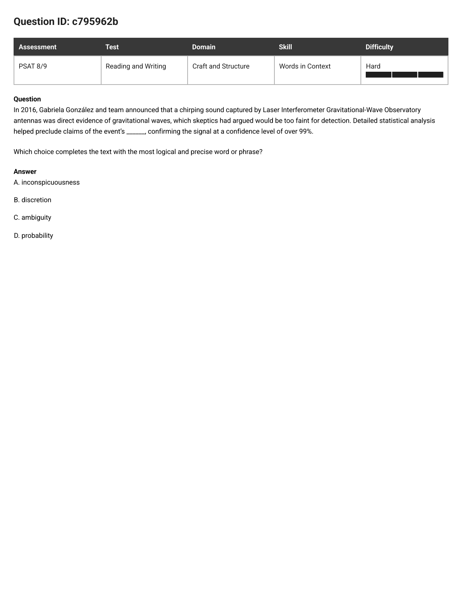
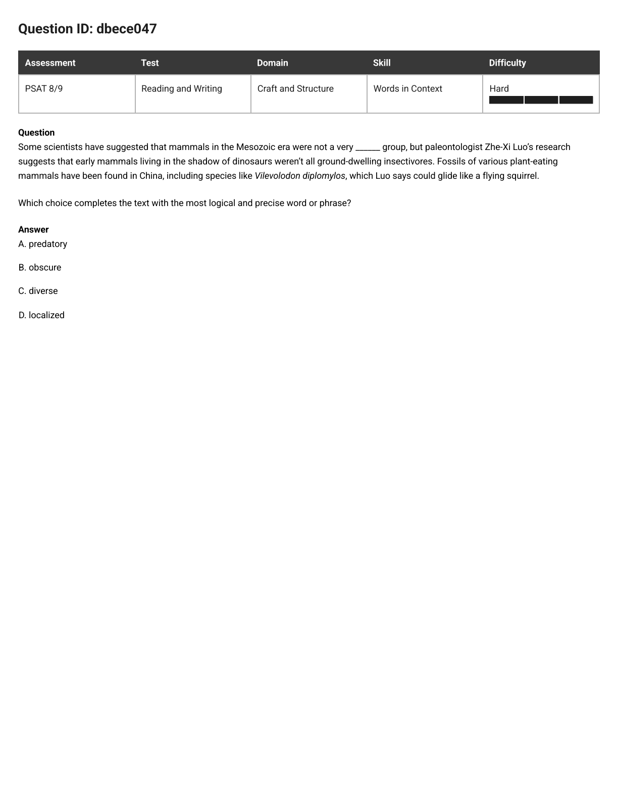
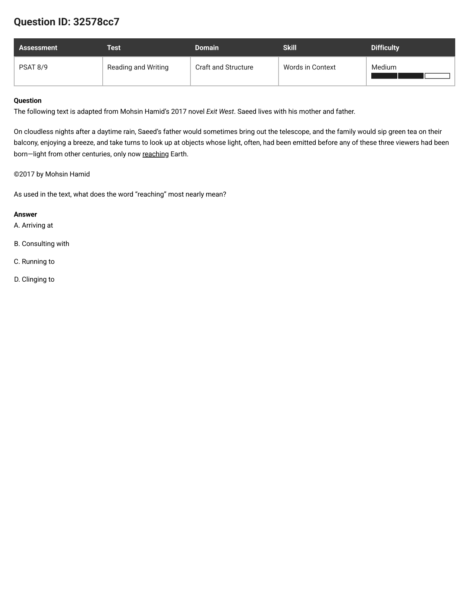
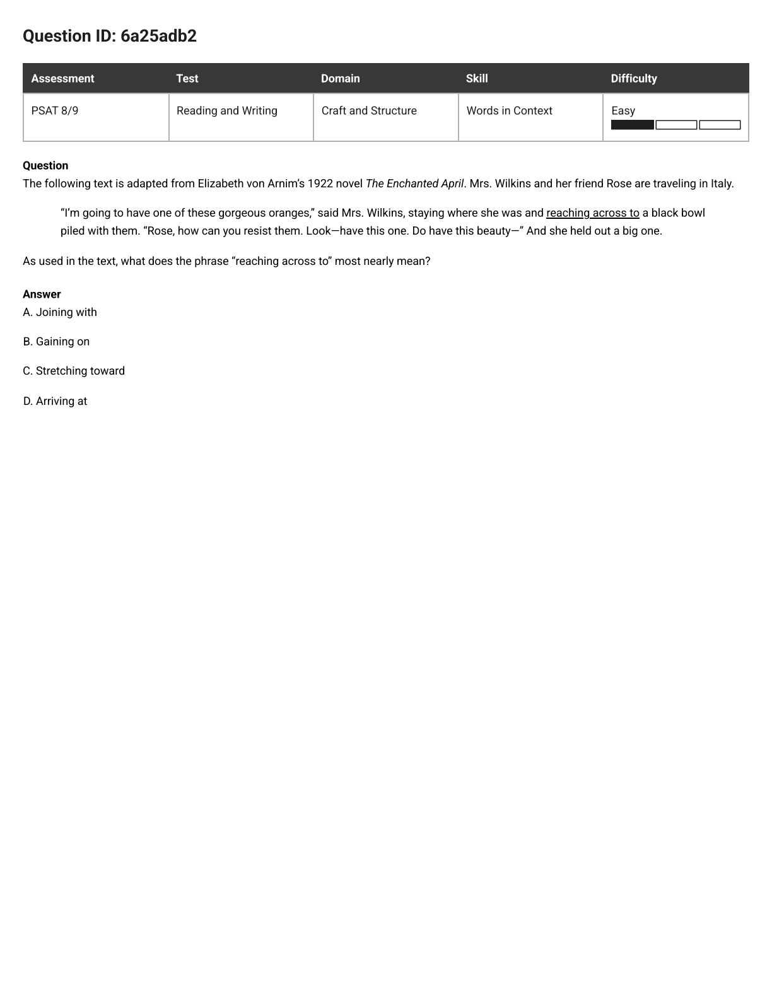
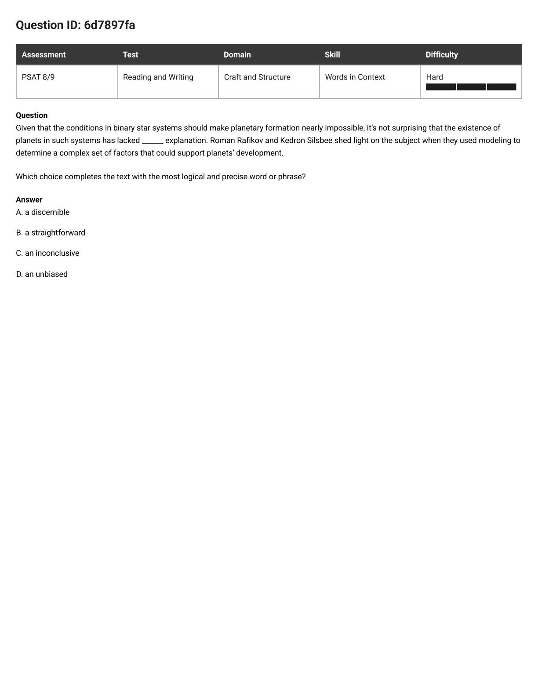
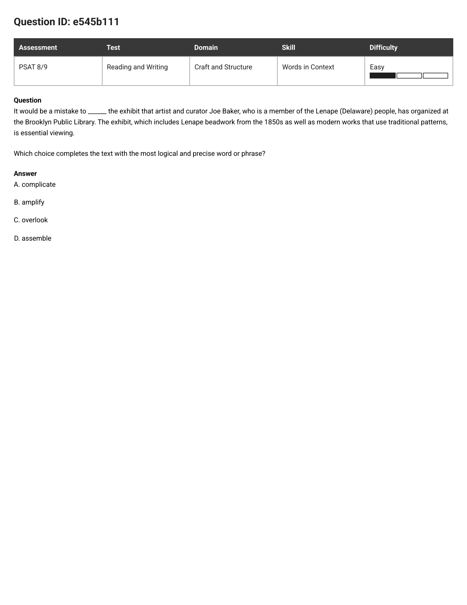
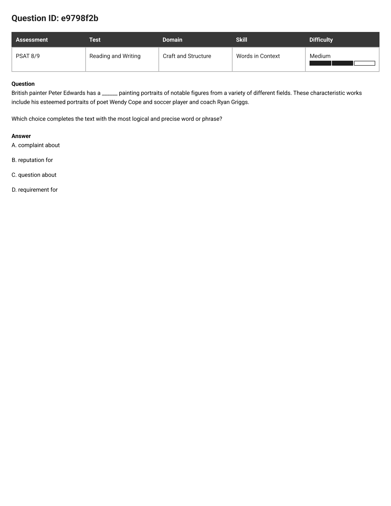
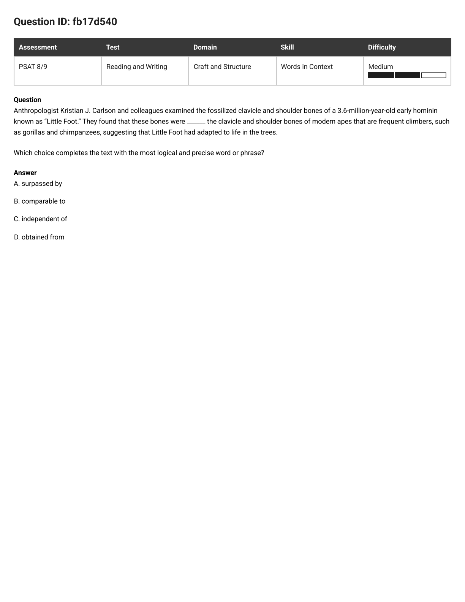
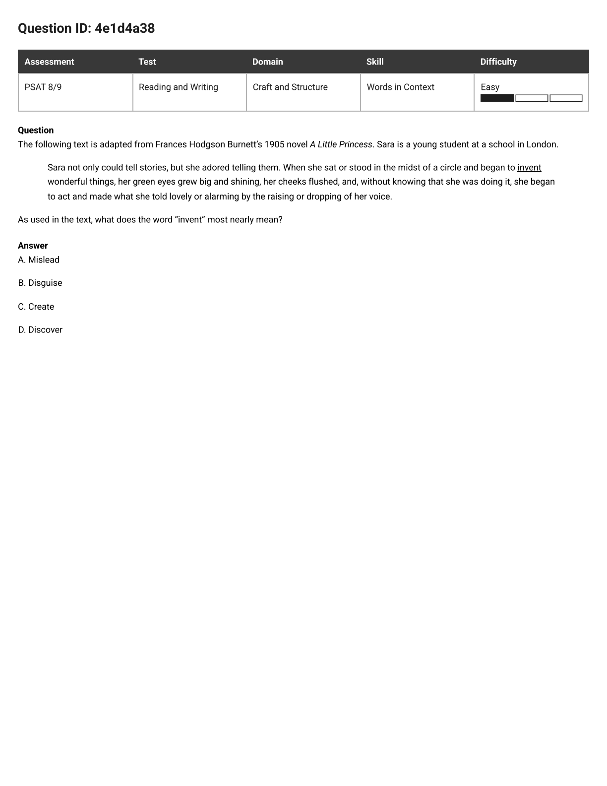
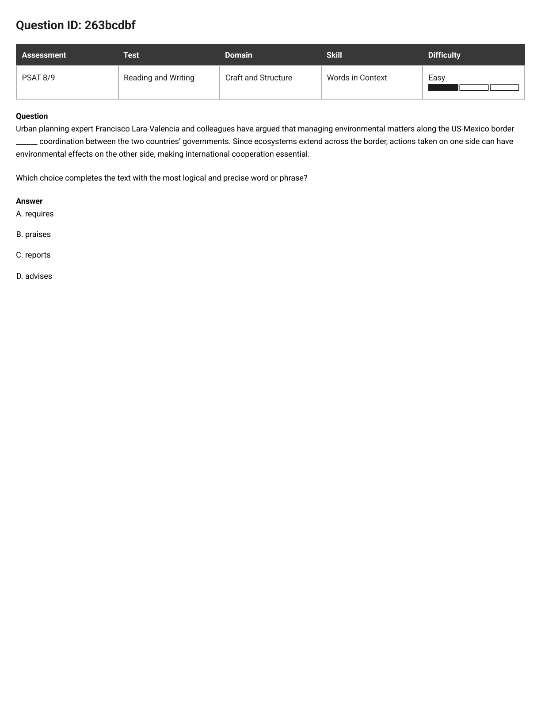

PSAT 8/9 · Words in Context · 8 missed questions, one model
Eight blanks, eight misses — and in every single one, the word that decided the answer was already sitting on the page, usually in the half of the sentence after the blank. The shared slip: meeting the four choices first and taking the one that sounds smartest about the topic. Four steps fix all eight.
Thumb over A–D. Actually do it. Four expensive-looking words parked under a sentence will bend how you read that sentence — you start shopping for the one that matches the subject (space, statistics, museums, fossils) instead of the one that does the sentence's work. The choices are the last thing you look at, never the first.
The blank is never free. Somewhere in the passage is the piece that says exactly what the blank has to do. Call it the tell. It is almost always after the blank, and very often in the next sentence. Four shapes cover nearly all of them:
Out loud, in the plainest word you own. Not a PSAT word. miss it. simple. unclear. varied. caused by. known for. look like. Ugly is the point: your word is a ruler, not a decoration. Once you own the ruler, three choices measure wrong instantly and you stop arguing yourself into them.
Not the phrase — the whole sentence, tell included, in your head, out to the period. Three of them will break something: a "but" that no longer flips, a conclusion that no longer follows, a double negative that quietly says the opposite. Keep the one that leaves your ugly word's meaning intact.
Topic Magnet. The word smells like the subject — or is literally lifted from a nearby sentence. Feels supported; does no work. Killed by COVER.
Off-Duty. Makes a perfectly fine English sentence while doing a job the tell never asked for. Killed by JOB.
Other Door. A real meaning of the word — just not the meaning this sentence opened. Killed by SAY.
Almost. Right family, one notch off in strength or direction: advises where the text needs requires. Killed by SWAP.
Backwards. Reverses the sentence. Watch for hidden double negatives — lacked an inconclusive explanation secretly means it had a conclusive one. Killed by SWAP.
Every one of these was decided by words he had already read. None needed a bigger vocabulary — they needed step 2.
| Question | The tell (already on the page) | Your ugly word | The answer |
|---|---|---|---|
| e545b111 | “is essential viewing” | don't miss it | overlook |
| 6d7897fa | “a complex set of factors” | simple | a straightforward |
| c795962b | “confirming the signal at a confidence level of over 99%” | unclear | ambiguity |
| dbece047 | “weren't all ground-dwelling insectivores” | varied | diverse |
| 32578cc7 | “light from other centuries, only now” | getting here | Arriving at |
| d423172b | “the relatively small pool of potential pollinators” | caused by | attributed to |
| e9798f2b | “These characteristic works include his esteemed portraits” | known for | reputation for |
| fb17d540 | “suggesting that Little Foot had adapted to life in the trees” | look like | comparable to |

The question as it appeared
In 2016, Gabriela González and team announced that a chirping sound captured by Laser Interferometer Gravitational-Wave Observatory antennas was direct evidence of gravitational waves, which skeptics had argued would be too faint for detection. Detailed statistical analysis helped preclude claims of the event's ______, confirming the signal at a confidence level of over 99%.
Which choice completes the text with the most logical and precise word or phrase?
In plain words: statistics ruled something out, and that ruling-out is what let them say "we're 99% sure." What kind of doubt does a 99% figure kill?
Highlighted above: confirming the signal at a confidence level of over 99%. That tail is the tell, and it does two things at once — it tells you the analysis ended a doubt, and it tells you which doubt: whether the chirp really was a gravitational wave rather than something else.
Ugly word: unclear-ness. Could-be-something-else-ness. That is the whole prediction, and it took four seconds. Now uncover the choices.
Read C back through the whole sentence: analysis helped preclude claims of the event's ambiguity, confirming the signal at over 99%. Rule out "it could be read two ways" and confirmation is exactly what you get left with. Clean.
C — ambiguity.
Step 1 did the work: the tail after the comma is the question. Cover the choices and the sentence hands you the answer before you've met a single one of them.
Baited by a word already in the sentence. "Too faint for detection" is right there, so inconspicuousness feels supported. But the sentence has already granted the chirp was captured — statistics can't make a quiet signal loud. They make a doubtful signal certain.
You're hearing "discreet." Discretion means being careful about what you reveal, or freedom to choose — a chirp in an antenna has neither. Real word, wrong door.
The purest magnet on the page, and it points the wrong way. Statistics, confidence level, 99% — every signpost says probability. Now swap it in: the analysis "precluded claims of the event's probability, confirming the signal at a confidence level of over 99%." A confidence level is a probability claim. The sentence would be ruling out the very thing it confirms one comma later. Dead.

The question as it appeared
Some scientists have suggested that mammals in the Mesozoic era were not a very ______ group, but paleontologist Zhe-Xi Luo's research suggests that early mammals living in the shadow of dinosaurs weren't all ground-dwelling insectivores. Fossils of various plant-eating mammals have been found in China, including species like Vilevolodon diplomylos, which Luo says could glide like a flying squirrel.
Which choice completes the text with the most logical and precise word or phrase?
In plain words: an old idea gets knocked down by a list of very different animals. What idea does a list of different animals knock down?
"Some scientists suggested X, but Luo's research suggests Y." Whatever the blank makes X mean, Luo's evidence must contradict it. So look at his evidence and nothing else: not all ground-dwellers, not all insect-eaters — plant-eaters too, and one that glides like a flying squirrel. That is a list of different ways of living.
The blank sits inside a negative: "were not a very ______ group." So say the word Luo's list proves, then hang the "not" back on it. His list proves the mammals were varied. So the old idea was "not very varied" — and the "but" flips it properly.
The flip works. Every other choice leaves the "but" flipping nothing.
C — diverse.
Step 2 did the work: read the evidence as a list, and a list of unlike things has exactly one label. The "not" is bookkeeping, not difficulty.
Stolen from the next clause. "Insectivores" sits in the same sentence, just past the "but", and insect-eaters sound predatory. Swap it back: "not a very predatory group, but they weren't all insectivores." The "but" flips nothing — insectivores are predators, so the second half supports the first instead of contradicting it.
A fine sentence doing the wrong job. "Mammals in the shadow of dinosaurs weren't very obscure" reads well — obscure is even baited by "in the shadow of". But obscure is about how well known something is, and Luo's evidence is a menu of lifestyles. A list of lifestyles proves variety, never fame.
Stolen from a place name. "Found in China" makes a place word feel evidenced. Swap it back: fossils turning up in one country is an argument for localized, not against it — so the "but" collapses again. Whenever a choice is a word the passage handed you, that's the moment to get suspicious, not comfortable.

The question as it appeared
The following text is adapted from Mohsin Hamid's 2017 novel Exit West. Saeed lives with his mother and father.
On cloudless nights after a daytime rain, Saeed's father would sometimes bring out the telescope, and the family would sip green tea on their balcony, enjoying a breeze, and take turns to look up at objects whose light, often, had been emitted before any of these three viewers had been born—light from other centuries, only now reaching Earth.
As used in the text, what does the word "reaching" most nearly mean?
In plain words: the light left ages ago and is only now getting here. Which word means "getting here"?
Highlighted above: the light had been emitted centuries ago, and it is only now doing whatever the blank word does to Earth. So the word marks the end of a very long journey — the moment of getting there, not the travelling.
Ugly, and exactly right. A is Arriving at. Done in six seconds.
Below is a different Words-in-Context question about the very same word. Cover the choices, find the tell, say your own word — then look at what happens.

The twin question
The following text is adapted from Elizabeth von Arnim's 1922 novel The Enchanted April. Mrs. Wilkins and her friend Rose are traveling in Italy.
"I'm going to have one of these gorgeous oranges," said Mrs. Wilkins, staying where she was and reaching across to a black bowl piled with them. "Rose, how can you resist them. Look—have this one. Do have this beauty—" And she held out a big one.
As used in the text, what does the phrase "reaching across to" most nearly mean?
A — Arriving at in Exit West. C — Stretching toward in The Enchanted April.
Steps 1 and 2 did the work, twice. A word has no meaning until a sentence gives it one — which is why memorising "reaching = arriving" would have cost you the second question. Predict from the sentence in front of you, every time.
Consulting with. That's reach out to — a real, common meaning of reach, and completely useless here. Light doesn't consult Earth.
Running to. Right direction — motion toward Earth — wrong everything else. "Running" gives the light legs and a hurry, when the point of the sentence is that it has been in transit for centuries.
Clinging to. That's reach for and grab. Nothing in the sentence has hands.
Joining with. Reach an agreement lives behind this door. Mrs. Wilkins is not negotiating with a fruit bowl.
Gaining on. Motion toward again — but gaining on something means closing a gap while both of you move. The tell says she is staying where she was.
Arriving at. A perfectly real meaning of "reach" — the one that won the previous question. Here it walks straight into "staying where she was" and dies. Doors are per-sentence.
Same model, fresh sentences. For each: cover the choices, find the tell and point at it, say your own ugly word out loud, then swap. Open the reveal only after you've picked — and check you can name the trap species on all three wrong choices.
6d7897fa · Hard · planets in binary star systems

Given that the conditions in binary star systems should make planetary formation nearly impossible, it's not surprising that the existence of planets in such systems has lacked ______ explanation. Roman Rafikov and Kedron Silsbee shed light on the subject when they used modeling to determine a complex set of factors that could support planets' development.
B — a straightforward. Step 2 (JOB) did the work: the tell is "a complex set of factors". The explanation that finally arrived is complicated — so the explanation that was missing all along was a simple one. That also makes "it's not surprising" make sense: impossible-looking conditions don't get easy explanations.
A a discernible is T4 Almost — right family (an adjective about the explanation's availability), wrong notch: nobody says the explanation was invisible, only that it turned out to be complex. C an inconclusive is T5 Backwards, the double negative — "lacked an inconclusive explanation" means it had a conclusive one, the opposite of the sentence. D an unbiased is T1 Topic Magnet: science register, but nobody in this sentence is accused of bias.
e545b111 · Easy · the Lenape beadwork exhibit

It would be a mistake to ______ the exhibit that artist and curator Joe Baker, who is a member of the Lenape (Delaware) people, has organized at the Brooklyn Public Library. The exhibit, which includes Lenape beadwork from the 1850s as well as modern works that use traditional patterns, is essential viewing.
C — overlook. Step 2 (JOB): the tell is the last two words, "essential viewing". There is exactly one mistake you can make with essential viewing — not viewing it.
A complicate is T2 Off-Duty: a fine sentence about nothing the text mentions. B amplify is T5 Backwards — amplifying an essential exhibit is the right thing to do, not the mistake. D assemble is T1 Topic Magnet: curators assemble exhibits, and this one says so ("has organized") — which is exactly why it feels safe and why it's bait.
d423172b · Medium · why zygomorphic flowers stay open longer
Zygomorphic (bilaterally symmetric) flowers remain open and functional on average 1.1 days longer than actinomorphic (radially symmetric) flowers do. Ruby E. Stephens and colleagues claim that this extended period could be ______ the relatively small pool of potential pollinators available to zygomorphic flowers and the greater chance at successful pollination that remaining open affords them.
C — attributed to. Step 2 (JOB) then Step 3 (SAY): the two things after the blank are reasons — a small pollinator pool, and a better chance if you stay open. Two reasons behind one effect means the blank is a cause word. Ugly word: caused by. "Attributed to" is the cause word.
A analogous to is T2 Off-Duty — it does a comparing job, and a length of time isn't similar to a pool of pollinators. B converted by is T4 Almost: the passive "by" smells causal, but converted means turned into something else, and nothing here turns into anything. D magnified by is T4 Almost too, and the tempting one — "greater chance" sits right there — but magnified means made bigger, while the researchers are explaining why the extra time exists, not what enlarged it.
e9798f2b · Medium · the portrait painter

British painter Peter Edwards has a ______ painting portraits of notable figures from a variety of different fields. These characteristic works include his esteemed portraits of poet Wendy Cope and soccer player and coach Ryan Griggs.
B — reputation for. Step 2 (JOB): the tell is two words in the second sentence — characteristic (he does this a lot) and esteemed (people rate it). Does a lot + admired for it = known for it.
This is the purest slot-versus-job question on the page: all four choices fit the grammar perfectly — "has a complaint about painting portraits" is a real English sentence. A, C and D are all T2 Off-Duty, three times over. Nothing in the text complains, questions, or requires anything. Fitting the hole is not the same as doing the job.
fb17d540 · Medium · Little Foot's shoulder bones

Anthropologist Kristian J. Carlson and colleagues examined the fossilized clavicle and shoulder bones of a 3.6-million-year-old early hominin known as "Little Foot." They found that these bones were ______ the clavicle and shoulder bones of modern apes that are frequent climbers, such as gorillas and chimpanzees, suggesting that Little Foot had adapted to life in the trees.
B — comparable to. Step 2 (JOB): the tell is the suggesting… tail. The conclusion "Little Foot had adapted to life in the trees" only follows if his bones look like the bones of apes that climb a lot. Ugly word: like.
A surpassed by is T4 Almost — a comparison word, right family, but "the apes' bones beat his" says nothing about whether he climbed. C independent of is T5 Backwards: no relationship means no conclusion, and the tail dies. D obtained from is T1 Topic Magnet — it sounds like lab work, and it literally claims the fossil bones came out of living gorillas.
4e1d4a38 · Easy sibling · same skill, gentler sentence

Sara not only could tell stories, but she adored telling them. When she sat or stood in the midst of a circle and began to invent wonderful things, her green eyes grew big and shining, her cheeks flushed… As used in the text, what does the word "invent" most nearly mean?
C — Create. Step 3 (SAY): cover the word, and ask what a storyteller does with "wonderful things" in front of a circle of listeners. She makes them up. That's Create.
A Mislead and B Disguise are both T3 Other Door — inventing can mean making up a lie, but nobody here is being fooled; the circle knows it's a story. D Discover is T5 Backwards: you invent what didn't exist, you discover what did.
263bcdbf · Easy sibling · the cause-word drill

Urban planning expert Francisco Lara-Valencia and colleagues have argued that managing environmental matters along the US-Mexico border ______ coordination between the two countries' governments. Since ecosystems extend across the border, actions taken on one side can have environmental effects on the other side, making international cooperation essential.
A — requires. Step 2 (JOB): the tell is the very last word of the passage — essential. Essential means you cannot do without it.
B praises and C reports are T2 Off-Duty. D advises is the instructive one: T4 Almost. Right direction, wrong strength — advising is a suggestion you may ignore, and "essential" leaves no room to ignore anything. Strength mismatches are the most common way an Almost gets picked.
stretch · retry in the app
Hard Words in Context questions you already got right — prove the model holds under pressure by running Cover → Job → Say → Swap on each before you answer, and naming the tell out loud: 1445de2f 5c80bb1c a69693e0.